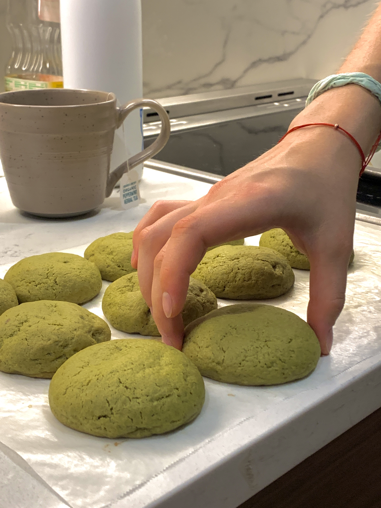

i was making this with liia (my friend/roommate) before fall 2022 semester started and i absolutely loved it. she followed this video and again soooooo good. i've been making chocolate chip cookies (sounds kind of boring i know but it wa a classic i guess) but i'm so glad liia showed me this recipe because i can now make some less boring cookies 😗

snack
makes 15-20 small/medium sized cookies | total time: maybe 2 hours
MATCHA COOKIES
ingredients
mochi
- 70g glutinous rice flour
- 20g corn starch
- 15-30g sugar
- 140g oat milk
matcha cookie dough:
- 2 cup flour
- 1 tbsp matcha powder
- ½ tsp baking soda
- ½ tsp salt
- 1 cup packed light brown sugar
- ½ cup white granulated (cane) sugar
- 10 tbsp (1 stick 2 tbsp) of room temp./softened butter
- 1 tbsp vanilla extract
- 1 egg
- 1 egg yolk
method
- combine the rice flour, corn starch & sugar
- gradually add in milk while whisking
- steam for 30 min & stir halfway through
- once the mochi is done, stir the mochi for 5 min > this will get it nice & stretchy/chewy
- cool in the fridge (might take uo to an hour)
- in a bowl, mix butter, brown & white sugar unitl light & fluffy
- add in eggs & vanilla extract & mix until just incorporated
- mix in matcha (sifted), baking soda & salt
- add in flour (not sifted) & fold
- pop the dough in the fridge for 30 minutes
- preheat the oven to 325 ℉
- take a scoop of your cookie dough and flatten it out
- place a piece of the mochi** in the center
* wet your hands or the spoon you are using so that the mochi doesn't stick
- fold the dough around the mochi, pinch it shut & roll it into a ball
- place the cookies on a parchment lined baking sheet
- bake for 12 minutes
- enjoy!! 🍪